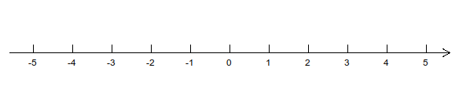
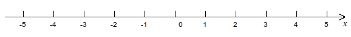
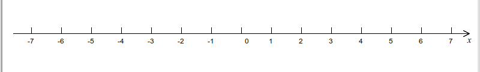
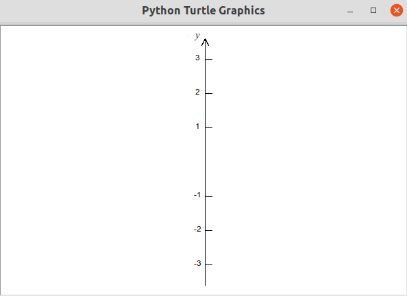
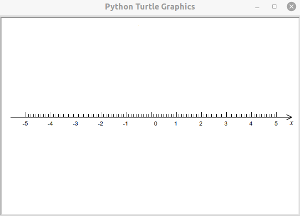

第13讲 认识和绘制数轴¶
Problem 问题描述¶
在长宽分别为600和400像素的绘图区域绘制如下图所示的一条标有刻度、水平方向的带箭头指示方向的数轴。其中数轴的左右两端距离绘图区域左右边界均为20像素，相邻刻度的距离为50像素，刻度线的长度为20像素，表示刻度线数值的数字在刻度线的正下方且底端距离数轴20个像素。

Math Background 数学背景¶
数轴的构成
数轴原点，正负数在数轴轴上的位置比较
每一个数在数轴上都有一个点相对应，两个数的差在数轴上表示的是这两个数对应的两个点之间的距离。
Prerequisites 预备知识¶
1. write方法可以在绘图区书写字符串¶
[ ]:
from turtle import setup, reset, pu, pd, bye, left, right, fd, bk, screensize
from turtle import goto, seth, write, ht, st, home
width, height = 600, 400 # 窗口的宽度和高度（单位为：像素）
setup(width, height, 0, 0)
比较提起画笔和放下画笔时下面的代码执行的效果有什么不同
[ ]:
reset()
pu()
write("Sophie", move=True, align="center")
[ ]:
reset()
pd()
write("Tony", move=True, align="center", font=("Arial", 30, "normal"))
[ ]:
reset()
pd()
write("Sophie", move=False, align="center", font=("Arial", 30, "normal"))
2. tuple元组数据类型¶
pos_x 是一个tuple类型的变量
[ ]:
pos_x = (30, 20) # pos_x 是一个tuple类型的变量
可以使用索引来获取tuple类型变量的元素
[ ]:
print(pos_x[0], pos_x[1]) # 可以使用索引来获取tuple类型变量的元素
可以使用len()方法来获取tuple类型数据的元素个数
[ ]:
len(pos_x) # 可以使用len()方法来获取tuple类型数据的元素个数
不可以更改tuple类型变量里某一个元素的值。例如执行下面的代码将发生错误 python pos_x[0] = 40
---------------------------------------------------------------------------
TypeError Traceback (most recent call last)
<ipython-input-24-d852e9299be9> in <module>
----> 1 pos_x[0] = 40
TypeError: 'tuple' object does not support item assignment
[ ]:
# pos_x[0] = 40 # 不可以更改tuple类型变量里某一个元素的值
可以给整个tuple类型变量赋予一个新的tuple值
[ ]:
pos_x = (50, 30) # 可以给整个tuple类型变量赋予一个新的tuple值
tuple型的变量里的元素的类型可以互不相同
[ ]:
sophie = ("Sophie", 11, "Female", "Grade4") # tuple型的变量里的元素的类型可以互不相同
print(sophie)
3. 理解同一个方法在接受不同的参数值时执行结果的比较¶
对比输出的文字和海龟位置，观察下面的两条write方法在接受不同的align值或时效果有什么不同。
[ ]:
reset()
pu()
write("Jason", align="left", font=("Arial", 30, "normal"))
[ ]:
reset()
pu()
write("Jason", align="center", font=("Arial", 30, "normal"))
4. 对比输出的文字，观察下面的几条write方法在接受不同的font值时效果有什么不同。¶
参数font是一个tuple类型的变量
[ ]:
reset()
pu()
write("Jason", font=("Arial", 30, "normal"))
[ ]:
reset()
pu()
write("Jason", font=("Arial", 50, "normal"))
[ ]:
reset()
pu()
write("Jason", font=("Times New Roman", 50, "normal"))
[ ]:
reset()
pu()
write("Jason", font=("Arial", 50, "italic"))
[ ]:
# no reset() here 这里没有reset()
pu()
bk(200) # 后退200
write("Jason", font=("Arial", 50, "underline"))
5. 区分()何时表示元组数据何时表示方法接受的参数¶
看()前面有没有紧跟一个方法名, 下面这行代码声明了一个元组型变量，变量名为jason。
jason = ("Jason", ("Arial", 50, "Italic")) #
下面这行代码是在执行一个名为jason的方法
jason("Jason", ("Arial", 50, "Italic"))
6. 练习¶
编写下面的代码，更改变量name的值为你的名字，观察代码执行的效果。
[ ]:
# 如果没有导入绘图库相关方法以及执行setup方法，请解除下面几行代码的注释
# from turtle import setup, reset, pu, pd, bye, left, right, fd, bk, screensize
# from turtle import goto, seth, write, ht, st, home
# width, height = 600, 400 # 窗口的宽度和高度（单位为：像素）
# setup(600, 400, 0, 0)
reset()
pu()
ht()
name = "Qiang"
text = "My name is {}.\nNice to meet you.".format(name)
write(text, align="center", font=("Arial", 30, "italic"))
Solution 编程求解¶
[1]:
from turtle import setup, reset, pu, pd, bye, left, right, fd, bk, screensize
from turtle import goto, seth, write, ht, st, home
width, height = 600, 400 # 窗口的宽度和高度（单位为：像素）
setup(width, height, 0, 0)
[2]:
origin = (0, 0) # 原点的位置
padding = 20 # 数轴端点距离绘图区边界距离
max_x = width/2 - padding # x轴最大值
show_arrow = True # 是否显示箭头
mark_interval = 50 # 刻度线间距
mark_line_length = 10 # 刻度线高度
text_offset = 20 # 坐标值距离坐标线的距离
mark_degree = 90 # 坐标刻度与坐标轴夹角
arrow_length = 10 # 箭头长度
arrow_degree = 30 # 箭头与坐标轴夹角
delta_x = 1 # 每次坐标值变化的幅度
[3]:
# Solution1: without using goto() 第一种方法：不使用goto()
from time import sleep
from turtle import speed
delta_x = 10
reset() # 重置绘图区
min_x = -1 * max_x # 根据坐标轴允许的最大值，获取该坐标轴允许的最小值
pu() # 提起画笔，暂停绘图
home() # Move turtle to the origin – coordinates (0,0) 移动小海龟至初始位置
# and set its heading to its start-orientation 并设置朝向为初始朝向
bk(max_x) # backward max_x # fd(min_x)
pd() # 落下画笔，准备绘图
speed(1)
# draw mark 绘制刻度线
cur_x, last_x = min_x, min_x # 海龟当前位置和最近一次绘图后停留的位置
while cur_x <= max_x: # 循环
if cur_x % mark_interval == 0: # 海龟的位置是相邻刻度间隔长度的整数倍
length_move = cur_x - last_x # 计算海龟应该前进的长度
pd() # 落下画笔，准备绘图
fd(length_move) # 海龟前进（绘制一小段）
left(mark_degree) # 向左转90度，海龟朝正上方，准备绘制刻度线
fd(mark_line_length) # 绘制刻度线
pu() # 把画笔提起暂停绘图
bk(mark_line_length + text_offset) # 后退（向下）一段长度
text = str(int(cur_x // mark_interval))
# 准备刻度值字符串（由整型数据转换而来）
write(text, align="center") # 在当前位置以居中的形式书写文字字符串
fd(text_offset) # 前进（向上）一小段长度
right(mark_degree) # 向右转90度，海龟次朝向右侧
last_x = cur_x # 记录海龟当前位置，为下次绘图的起点
sleep(0.1)
cur_x += delta_x # 当前位置增加一小段长度（个单位距离：像素）
pd() # 落下画笔，准备绘制
fd(max_x - last_x) # 绘制最后一个刻度线到数轴最大x值这一小段
if show_arrow: # 如果需要绘制箭头
right(arrow_degree) # 向右转，海龟朝向右侧偏下
bk(arrow_length) # 后退一定距离，绘制箭头一边
fd(arrow_length) # 回到max_x位置
left(arrow_degree * 2) # 向左转，海龟朝向右侧偏上
bk(arrow_length) # 后退一定距离，绘制箭头另一边
ht() # 隐藏海龟
[12]:
# Solution2: using goto() 第二种方法：使用goto()
reset()
min_x = -1 * max_x
# draw line
pu() # 提起画笔，暂停绘图
home() # Move turtle to the origin – coordinates (0,0) 移动小海龟至初始位置
# and set its heading to its start-orientation 并设置朝向为初始朝向
goto(min_x, 0) # go to the left end of the line 移动海龟到坐标轴直线的最左端
pd() # 落下画笔，准备绘图
goto(max_x, 0) # go to the right end of the line 移动海龟到坐标轴直线的最右段
# draw mark 绘制刻度线
cur_x = min_x
while cur_x <= max_x:
if cur_x % mark_interval == 0:
pu()
goto(cur_x, 0)
pd()
goto(cur_x, mark_line_length) # 绘制刻度线
pu()
goto(cur_x, -text_offset)
pd()
text = str(int(cur_x//mark_interval))
write(text, align="center") # 书写刻度值
cur_x += delta_x
if show_arrow:
arrow_x, arrow_y = max_x - 10, -5
pu()
goto(max_x, 0)
pd()
goto(arrow_x, arrow_y)
pu()
goto(max_x, 0)
pd()
goto(arrow_x, -arrow_y)
ht()
[6]:
st()
pu()
home()
pd()
goto(200, 100)
goto(200, 200)
[11]:
goto(max_x, -50)
[15]:
text = str(int(cur_x//mark_interval))
print(cur_x, mark_interval)
print(text)
290.0 50
5
[16]:
-1//3
[16]:
-1
Summary 知识点小结¶
turtle绘图库里的新方法
write可以在绘图区海龟的当前位置书写文字；新的数据类型：
tuple元组数据类型，它与list数据类型非常类似，但也有区别；在执行一个方法时，方法名后面的小括号
()内可以接受一个或多个不同的数据，这些数据成为该方法可以接受的参数。方法接受的参数的值不一样，执行该方法最后得到的结果也通常不同；复习格式化字符串的
format方法；复习
while循环，并将while过程中循环应用到绘图过程中；复习操作符
//和%。
计算机小知识¶
像素，字体font
Assignments 作业¶
仔细阅读本讲示例中给出的两种绘制坐标轴方法，回答下面的问题： Read carefully the two solutions demonstrated in the lecture, answer the following questions:
给第二种方法中的每一行代码添加注释 Add comments for every code line of the second solution to tell the meaning of each code line.
比较并说出两种方法在绘制坐标轴的差别 Compare the two solutions and tell the difference of them in drawing the axis.
两种方法绘制出来的箭头一模一样吗？为什么？ Are the arrows drawn by the two solutoins exactly same? why?
（在这里写上你的回答 Write your answer here）
编程绘制如下图所示的水平坐标轴。所用的刻度间距、刻度线长度等排版指标军与本讲示例相同。其中，与本讲示例不同的是： By programming, draw horizontal axies as the following figure shows. Most of the parameters, including the marker interval, marker length, etc, have the same value as in the lecture. However, there are still some significant differences, which are:
将表示0刻度坐标值的文字“0”的位置向右移动距离10，刻度线仍保持与相邻的刻度线等距离不变； Move the text “0”, which indicating the value 0 on the axis, 10 pixels right to its original position. Keep the mark line where it is.
在箭头的下方添加字母“x”，字母“x”使用的字体是“Arial”,字号大小为10，风格为“斜体”。Add a letter “x” under the arrow at the right end of the axis, use font “Arial”, size 10, and “italic” to write the “x”
当调整绘图区域的大小为宽为800像素时，你的代码应该仅需要更新绘图区的宽度而不改变其他地方就能直接调整数轴长度和刻度的显示。When the width of drawing area changed to 800 pixels from 600 pixels, your codes should only need to change the value of
widthwhile keep others unchanged to draw the axis with new length and markers.


[ ]:
from turtle import setup, reset, pu, pd, bye, left, right, fd, bk, screensize
from turtle import goto, seth, write, ht, st, home
width, height = 800, 400 # 窗口的宽度和高度（单位为：像素）
setup(width, height, 0, 0)
origin = (0, 0) # 原点的位置
padding = 20 # 数轴端点距离绘图区边界距离
max_x = width/2 - padding # x轴最大值
show_arrow = True # 是否显示箭头
mark_interval = 50 # 刻度线间距
mark_line_length = 10 # 刻度线高度
text_offset = 20 # 坐标值距离坐标线的距离
mark_degree = 90 # 坐标刻度与坐标轴夹角
arrow_length = 10 # 箭头长度
arrow_degree = 30 # 箭头与坐标轴夹角
delta_x = 1
[ ]:
reset()
#TODO: Add your own codes here 在这里添加你自己的代码
ht()
编程绘制一条如下图所示的垂直方向上的坐标轴。要求：By programming, draw an ertical axis as the following figure shows. Requirement：
该图所是的坐标轴基本上是把水平方向的坐标轴围绕这坐标原点向左侧旋转90度得到； The axis can basically be considered as a 90 degree of anti-closewise rotation of the horizontal axis illustrated in the lecture with original zero point as the rotation center;
大部分控制数轴风格的参数值与示例中的一样，下列除外：但是刻度线位于坐标轴的右侧，刻度值位于坐标轴的左侧。Most of the parameters controlling the style of the axis are same as introduced in the lecture, except: the marker lines are located on right side of the axis line, and the marker values are on the left side;
隐藏表示0刻度坐标值的文字“0”以及对应的刻度线； Hide the marker line and the marker value for origin point;
在箭头的左侧添加字母“y”，字母“y”使用的字体是“Arial”,字号大小为10，风格为“斜体”。Add the letter “y” on left side of the axis end, the font for “y” is “Arial”, size is 10, and style is “italic”;
如果绘图区的高度发生改变不再是400像素，你的代码应仅需要修改一处就能重新绘制出填满大部分（保留上下个20像素高的间隙）绘图区高度的数轴。If the height of drawing area is changed to any other value other than 400 pixels, your codes should only need to change one place in order to draw the new vertical axis that fullfill the most height of the draw area (keep 20 pixels paddings for both ends).

[ ]:
reset()
#TODO: Add your own codes here 在这里添加你自己的代码
ht()
编程绘制一条如下图所示的水平坐标轴。与本讲示例不同的是：By programming, draw a horizontal axis with major and minor marker lines as shown in the figure. Most of the parameters that control the style of the aixs remain same as introduced in the lecture, except:
在刻度线的内部再绘制9条段的次要刻度线，这样原来相邻的两条刻度线被等间距的分为10个等分，每个等分对应的长度为5；Add 9 minor marker lines within two major marker lines so that every major marker interval is divided into 10 equal minor marker intervals, each 5 pixles length;
与原来刻度线的宽度为10不同，次要刻度线的宽度为6； the length of the minor marker line is 6 pixels, keep the length of the major marker line 10 pixels unchanged;
(困难，可选做）在左右两侧整数刻度之外的区域**不要**绘制次要刻度线；(Difficult, Optional) Do NOT add minor maker lines on the parts where the position is smaller than the minimal major marker value or larger than the maximal major marker value;
将表示0刻度坐标值的文字“0”的位置向右移动距离10，刻度线仍保持与相邻的刻度线等距离不变； Move the text “0”, which indicating the value 0 on the axis, 10 pixels right to its original position. Keep the mark line where it is;
在箭头的下方添加字母“x”，字母“x”使用的字体是“Arial”,字号大小为10，风格为“斜体”。Add a letter “x” under the arrow at the right end of the axis, use font “Arial”, size 10, and “italic” to write the “x”;
当调整绘图区域的大小为宽为800像素时，你的代码应该仅需要更新绘图区的宽度而不改变其他地方就能直接调整数轴长度和刻度的显示。When the width of drawing area changed to 800 pixels from 600 pixels, your codes should only need to change the value of
widthwhile keep others unchanged to draw the axis with new length and markers.

[ ]:
reset()
#TODO: Add your own codes here 在这里添加你自己的代码
ht()
[ ]: